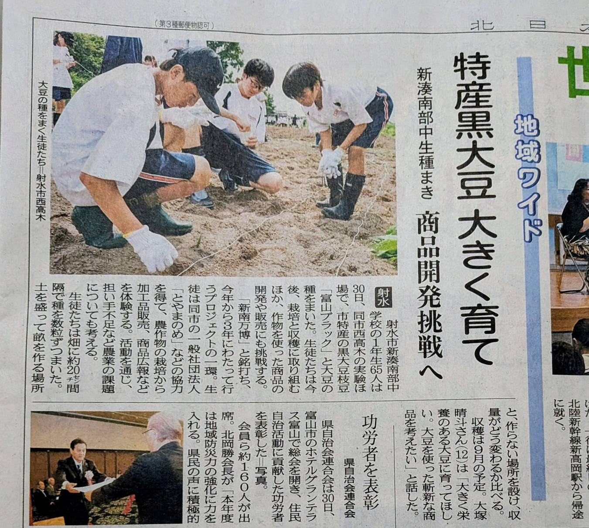
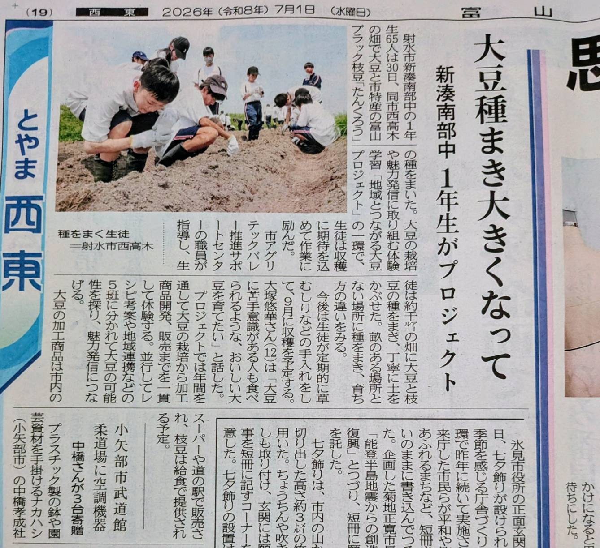

当日の実践内容
- 富山ブラック枝豆「たんくろう」と大豆「オオツル」の2品種を播種
- 生徒65名が実験ほ場で、畝づくりと種まきの基本を体験
- 今後の収穫、加工商品開発、販売につながる栽培の出発点を共有
- 農作業を通じて、担い手不足や食の未来といった農業課題も考える機会になった
June 30 / 2026
新湊南部中学校1年生65名が、市内西高木の実験ほ場で、 富山ブラック枝豆「たんくろう」と大豆「オオツル」の種まきを行いました。 商品開発や販売へつながる第一歩として、栽培の現場に立った活動の記録です。

「特産黒大豆枝豆を育て 商品開発挑戦へ」。たんくろうと大豆の種まきが、商品開発・販売までつながる活動として報じられました。

「大豆種まき大きくなって」。生徒たちが約千平方メートルの畑で播種に取り組み、収穫への期待を込めて作業する様子が紹介されました。